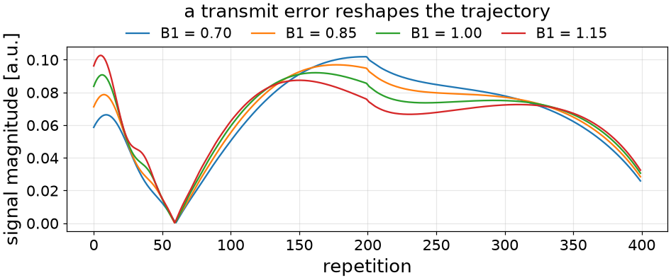
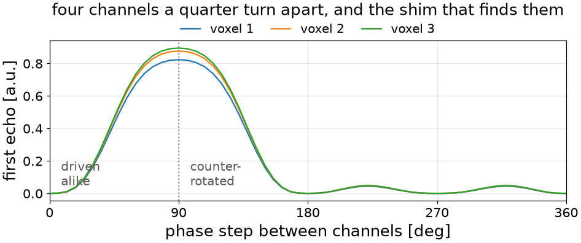
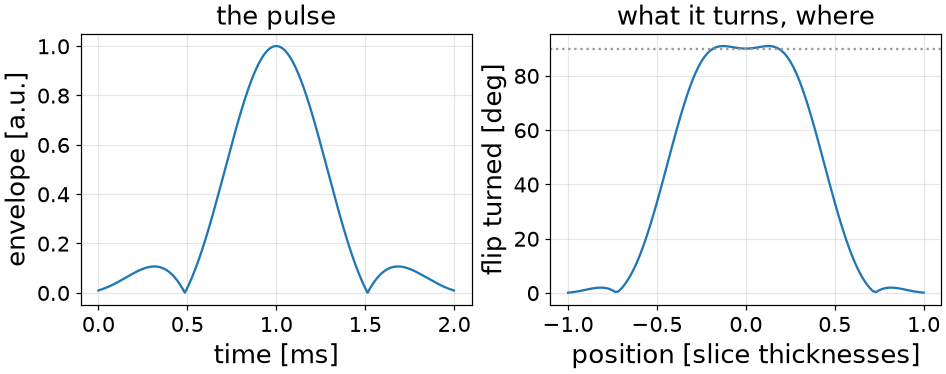
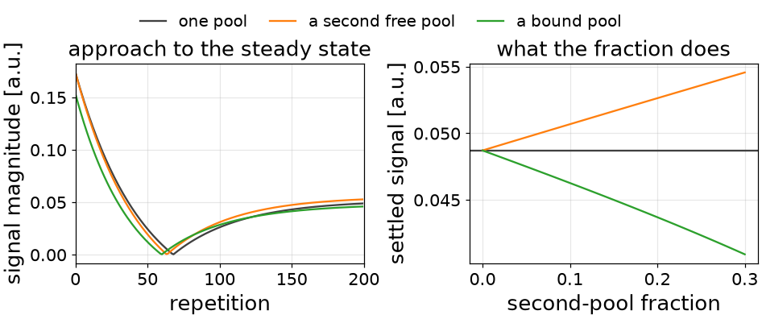
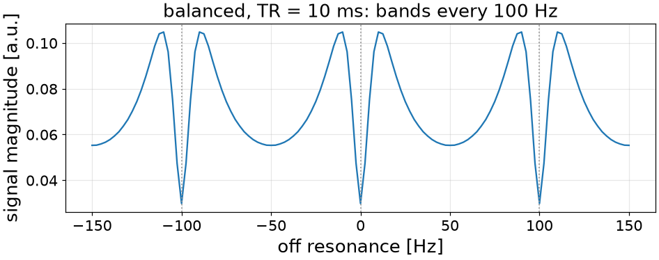
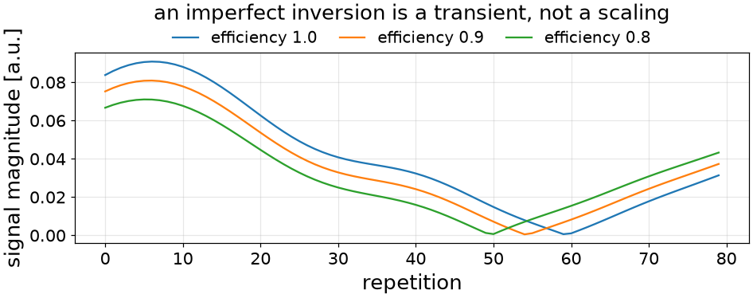
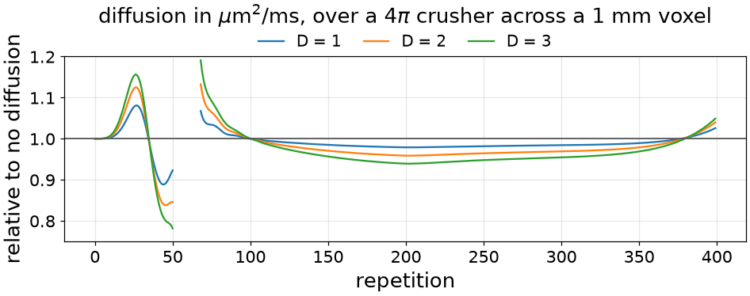
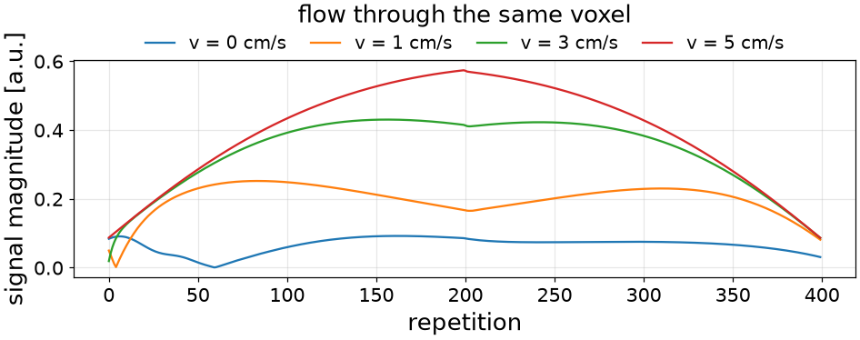

Note
Go to the end to download the full example code or to run this example in your browser via Binder.
Expanded Physics#
The scope of this notebook is to show the physics a simulator can carry beyond T1 and T2: the transmit field and the array that produces it, off resonance, an imperfect inversion, a second exchanging pool, a bound pool, diffusion and flow, and the shaped pulse a scanner actually plays.
Each term is a tissue property. Naming one in a call is what turns it on, and what a voxel is not given costs nothing.
Every simulator accepts any tissue property, whether or not it declares one.
import math
from pathlib import Path
import numpy as np
import torch
import torchsim
from torchsim import SPGRReadout, ShimDefinition, bSSFPReadout
from torchsim.simulators import FSESimulator, MRFSimulator
Test sequence#
An inversion-prepared fingerprinting train: four hundred repetitions at a fixed TR, with a flip angle that rises and falls smoothly. It drives every coherence pathway, so most terms below can be shown on it. Where a term needs a different readout to be visible, only the readout is changed.
FLIP_DEG = np.concatenate((np.linspace(5.0, 55.0, 200), np.linspace(55.0, 5.0, 200)))
TRAIN = dict(flip=FLIP_DEG, TR=10.0, TI=20.0, states=20)
WATER = dict(T1=1000.0, T2=80.0)
fingerprinting = MRFSimulator(**TRAIN)
baseline = fingerprinting.simulate(**WATER)
MRFSimulator names T1, T2, M0, a transmit scaling and an inversion
efficiency. Every other field a voxel has can be given to it anyway, and
giving one is what asks for its physics:
declared: T1, T2, M0, B1, inv_efficiency
accepted: T1, T2, M0, B1, inv_efficiency, B1phase, B0, T2prime, D, v, bound_fraction, bound_exchange, bound_T1, poolB_fraction, poolB_exchange, poolB_T1, poolB_T2, poolB_shift
the sequence is written in: flip, TR, TI, phases
Transmit field#
B1 scales the flip angle a voxel turns. Because the nominal angle changes
every repetition, a transmit error distorts the trajectory rather than
scaling it – which is what makes B1 estimable alongside T1 and T2, and what
makes ignoring it a bias in both.
transmit = torch.tensor([0.7, 0.85, 1.0, 1.15])
scaled = fingerprinting.simulate(**WATER, B1=transmit)

[<matplotlib.legend.Legend object at 0x7fbdea488b00>]
Transmit array and RF shim#
On a parallel-transmit system the field is the complex sum of what several
channels put on the voxel. B1 and B1phase then carry one row per
channel, and a ShimDefinition gives the amplitude and
phase each channel is driven at.
Four channels whose sensitivities sit a quarter turn apart, driven alike, cancel exactly. The array is summed as a complex field before the state machine sees it, so a single pair of per-voxel buffers reaches the kernels.
CHANNELS, VOXELS = 4, 3
sensitivity = torch.full((CHANNELS, VOXELS), 1.0 / CHANNELS)
sensitivity_phase = (
(torch.arange(CHANNELS)[:, None] * 2.0 * math.pi / CHANNELS)
.expand(CHANNELS, VOXELS)
.contiguous()
.float()
)
ARRAY = dict(
T1=torch.linspace(600.0, 1400.0, VOXELS),
T2=torch.linspace(40.0, 120.0, VOXELS),
B1=sensitivity,
B1phase=sensitivity_phase,
)
def first_echo(step_rad):
"""What a shim holding each channel one more step behind leaves per voxel."""
shim = ShimDefinition(
0,
(1.0,) * CHANNELS,
tuple(float(-channel * step_rad) for channel in range(CHANNELS)),
)
train = FSESimulator(
ESP=5.0,
flip=torch.full((8,), 150.0),
states=12,
shims={0: shim},
)
return train.simulate(**ARRAY)[..., 0].abs()
steps_rad = torch.linspace(0.0, 2.0 * math.pi, 61)
swept = torch.stack([first_echo(float(step)) for step in steps_rad])

driven alike [0.0, 0.0, 0.0]
counter-rotated [0.8234, 0.8765, 0.8949]
[<matplotlib.legend.Legend object at 0x7fbdea4c2570>]
A shim belongs to the pulse rather than to the sequence: each RF event names the shim it is driven on, so an excitation and a refocusing pulse can use different ones.
Shaped RF pulse and slice profile#
The pulses above are instantaneous. A real slice-selective excitation turns a different angle at each position in the slice, and because that is a Bloch response rather than a scaling, it cannot be folded into the flip angle: the pulse must be integrated.
TorchSim takes the complex envelope, one row per transmit channel, as it comes off a Pulseq block or an MRD sequence description. This one is an SLR 90 degree pulse, 2 ms long over a 5 mm slice, saved beside this file.
pulse is the waveform the RF events drive; across_slice is how many
positions to integrate it at. Without the second, the pulse is evaluated at
the slice centre only, which reproduces the hard-pulse answer.
REFOCUSED = dict(ESP=5.0, TR=3000.0, T1=830.0, T2=80.0, states=48)
angles = torch.full((48,), 150.0)
hard = FSESimulator(**REFOCUSED).simulate(flip=angles)
centre = FSESimulator(**REFOCUSED, pulse=excitation).simulate(flip=angles)
across = FSESimulator(**REFOCUSED, pulse=excitation, across_slice=21).simulate(
flip=angles
)
The table holds the flip a spin turns at each position: flat across the passband and falling away outside it.

at the slice centre 0.8812 (hard pulse)
the shaped pulse there 0.8812
averaged over the slice 0.3153
the profile costs 64% of the signal
At the centre the shaped pulse reproduces the hard-pulse answer, which confirms the envelope is scaled correctly. Averaged across the slice it is much smaller, and for a refocused train the difference is not a scaling: the slice edges see a smaller refocusing angle and therefore a different balance of coherence pathways.
Exchange and magnetization transfer#
A second free pool – myelin water beside intra- and extracellular water – is recorded along with the first. A bound pool has a T2 of tens of microseconds and is never recorded, but exchanges with the water that is.
Five properties describe an exchanging free pool and three a bound pool. Both are shown on a spoiled train driven to steady state, using the white matter models of Malik et al. (Magn. Reson. Med. 2018).
REPETITIONS, TR_MS, SPOILED_FLIP, SPOILING_STEP = 200, 5.0, 10.0, 117.0
index = np.arange(REPETITIONS)
SPOILED_TRAIN = dict(
flip=np.full(REPETITIONS, SPOILED_FLIP),
phases=SPOILING_STEP * index * (index + 1) / 2.0,
TR=TR_MS,
TI=0.0,
states=40,
)
WHITE_MATTER = dict(T1=779.0, T2=45.0)
FREE = dict(poolB_exchange=2.0, poolB_T1=500.0, poolB_T2=20.0)
BOUND = dict(bound_exchange=4.3, bound_T1=779.0)
class SpoiledMRF(MRFSimulator):
"""The same train, read with a spoiled gradient echo."""
readout = SPGRReadout
spoiled = SpoiledMRF(**SPOILED_TRAIN)
one_pool = spoiled.simulate(**WHITE_MATTER)
with_free = spoiled.simulate(**WHITE_MATTER, poolB_fraction=0.2, **FREE)
with_bound = spoiled.simulate(**WHITE_MATTER, bound_fraction=0.117, **BOUND)
The pool fraction is a tissue property, so sweeping it is one call over a voxel axis. At zero fraction both must return the single-pool answer.
fractions = torch.linspace(0.0, 0.3, 31)
free_sweep = spoiled.simulate(**WHITE_MATTER, poolB_fraction=fractions, **FREE)
bound_sweep = spoiled.simulate(**WHITE_MATTER, bound_fraction=fractions, **BOUND)

one pool settles at 0.04870
a second free pool 0.05263
a bound pool 0.04583
at a fraction of nothing the two rejoin it, to 3.9e-07
The two move the signal in opposite directions: filling a second free pool raises it, since that pool is recorded too, while filling a bound pool lowers it, since the magnetization parked there is never read.
The properties are independent, so a voxel can carry both – eight names in one call.
three_pool = spoiled.simulate(
**WHITE_MATTER, poolB_fraction=0.2, **FREE, bound_fraction=0.117, **BOUND
)
both pools together 0.04958
Off resonance#
B0 turns the transverse states between events. Whether that reaches the
signal depends on the sequence: a train that dephases by a whole
configuration order every repetition separates the orders and is insensitive to
it, while a balanced train bands. Only the readout is changed below.
BALANCED_TR_MS = 10.0
offsets_hz = torch.linspace(-150.0, 150.0, 121)
class BalancedMRF(MRFSimulator):
"""The same train, read with a fully refocused steady state."""
readout = bSSFPReadout
banded = BalancedMRF(
flip=np.full(64, 20.0),
TR=BALANCED_TR_MS,
TI=0.0,
states=20,
).simulate(T1=1000.0, T2=80.0, B0=offsets_hz, repetitions="auto")

nulls sit 100 Hz apart, which is 1 / TR
Inversion efficiency#
inv_efficiency is the fraction of magnetization the inversion pulse
turns over. It affects the front of the train, where the inversion sets the
contrast.
efficiencies = torch.tensor([1.0, 0.9, 0.8])
inverted = fingerprinting.simulate(**WATER, inv_efficiency=efficiencies)

the first repetition falls to 0.796 of the ideal;
by the four-hundredth the three agree to 3.7e-05
Diffusion and flow#
Both are read off the winding a gradient has put on a configuration order, so
the sequence must say how much winding an order stands for. That is two
simulator arguments rather than tissue properties: crusher_dephasing_rad,
the turn one crusher puts across a voxel, and voxel_size_m, the distance
it puts it across. Without them an order has no physical extent and neither
term does anything.
MOMENT = dict(crusher_dephasing_rad=4.0 * math.pi, voxel_size_m=1e-3)
moving = MRFSimulator(**TRAIN, **MOMENT)
diffusivities = torch.tensor([0.0, 1.0, 2.0, 3.0])
velocities = torch.tensor([0.0, 0.01, 0.03, 0.05])
diffusing = moving.simulate(**WATER, D=diffusivities)
flowing = moving.simulate(**WATER, v=velocities)
The train is only mildly diffusion-weighted, so diffusion is drawn as a ratio to a voxel that does not diffuse. Flow is large enough to read directly.


diffusion damps the higher orders, so it costs signal where the train is built from them:
D = 3 departs from D = 0 by 8%
flow carries winding out of the voxel and brings unsaturated magnetization in, so it reshapes the train:
5 cm/s departs by 5.3x the unflowed signal
Cost of an unused property#
Nothing. A property held at the value where it has no effect – unit transmit, no off resonance, an empty pool – is reported absent, and its term is left out of the kernel that is compiled and run.
idle = fingerprinting.simulate(
**WATER,
B0=0.0,
D=0.0,
v=0.0,
poolB_fraction=0.0,
bound_fraction=0.0,
inv_efficiency=1.0,
)
six more fields named, none of them doing anything: agrees to 0.0e+00
Every term above is one the kernels already carry. A term they do not – a third free pool, a gradient moment that varies down the train – is a change to the engine rather than a name in a call.
Total running time of the script: (0 minutes 29.344 seconds)